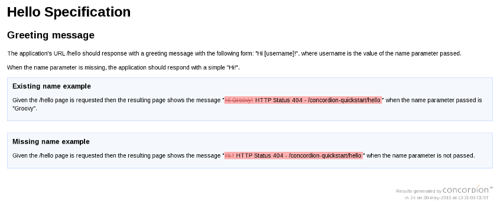

This quickstart shows how to use the Concordion plugin to write specifications
that test the web behaviour of a Grails application using Geb.Step 1: Create a sample Grails project
grails create-app concordion-quickstart
Step 2: Install the Concordion plugin
cd concordion-quickstart
grails install-plugin concordion
Step 3: Create an specification template
Execute the create-concordion-test command with the geb argument:grails create-concordion-test -web es.osoco.concordion.quickstart.Hello
test/concordion/es/osoco/concordion/quickstart
directory a Geb-based specification we can use as starting point, consisting in the
files Hello.html and HelloTest.groovy.Step 4: Create the specification
Change the previous sample specification (Hello.html) to adapt it to the actual requirements.Suppose that out imaginary client has requested us an application that reply with a greeting message
that includes the user's name that is sent as a request parameter. We can translate this requirement
to the following Concordion specification:<html xmlns:concordion="http://www.concordion.org/2007/concordion" xmlns:ext="urn:concordion-extensions:2010">
<head>
<title>Hello Specification</title>
</head>
<body> <h1>Hello Specification</h1> <h2>Greeting message</h2> <p>
The application's URL /hello should response with a greeting message with the
following form: "Hi [username]!", where username is the value
of the name parameter passed.
</p> <p>
When the name parameter is missing, the application should respond with a simple "Hi!".
</p> <div class="example">
<h3>Existing name example</h3>
<p>
Given the /hello page is requested
then the resulting page shows the message "Hi Groovy!"
when the name parameter passed is "Groovy".
</p>
</div> <div class="example">
<h3>Missing name example</h3>
<p>
Given the /hello page is requested
then the resulting page shows the message "Hi !"
when the name parameter is not passed.
</p>
</div></body>
</html>Step 5: Validate the specifications
Once you have writen the specifications it would be convenient that you can review
and validate them with your client before you start with the instrumentation and fixture works.Step 6: Create the required instrumentation and fixture
Now we instrument the previous specification through Concordion specific attributes:<html xmlns:concordion="http://www.concordion.org/2007/concordion" xmlns:ext="urn:concordion-extensions:2010">
<head>
<title>Hello Specification</title>
</head>
<body> <h1>Hello Specification</h1> <h2>Greeting message</h2> <p>
The application's URL /hello should response with a greeting message with the
following form: "Hi [username]!", where username is the value
of the name parameter passed.
</p> <p>
When the name parameter is missing, the application should respond with a simple "Hi!".
</p> <div class="example">
<h3>Existing name example</h3>
<p concordion:execute="#h1Message = h1MessageForName(#name)">
Given the /hello page is requested
then the resulting page shows the message
"<span concordion:assertEquals="#h1Message">Hi Groovy!</span>"
when the name parameter passed is "<span concordion:set="#name">Groovy</span>".
</p>
</div> <div class="example">
<h3>Missing name example</h3>
<p concordion:execute="#h1Message = h1MessageForName(#name)">
Given the /hello page is requested
then the resulting page shows the message
"<span concordion:assertEquals="#h1Message">Hi !</span>"
when the name parameter is not passed<span concordion:set="#name"></span>.
</p>
</div></body>
</html>HelloTest.grovy (or we can edit the generated in step 3)
in the following way:package es.osoco.concordion.quickstartimport geb.Browser
import geb.Pageimport org.openqa.selenium.WebDriver
import org.openqa.selenium.firefox.FirefoxDriverimport org.junit.AfterClass
import org.junit.BeforeClasspublic class HelloTest { private static WebDriver webDriver @BeforeClass
public static void setup() {
webDriver = new FirefoxDriver()
} String h1MessageForName(String name) {
def browser = new Browser(webDriver)
browser.to(HelloPage, name: name)
browser.message
} @AfterClass
public static void close() {
webDriver?.close()
}}class HelloPage extends Page { static url = "http://localhost:8080/concordion-quickstart/hello"
static content = {
message { $("h1").text() }
}
}BuildConfig.groovy:dependencies {
…
test("org.codehaus.geb:geb-core:latest.release")
test("org.seleniumhq.selenium:selenium-firefox-driver:2.0a7")
}Step 7: Run the tests with failures (red bar)
We run the previous test with the following command:grails test-app concordion: Hello
target/test-reports/concordion/es/osoco/concordion/quickstart/Hello.html.The following figure shows how the test fails with 404 errors:Step 8: Create a Controller to pass the specification test
grails create-controller es.osoco.concordion.quickstart.Hello
package es.osoco.concordion.quickstartclass HelloController { def index = { render "<h1>Hi ${params.name ?: ''}!</h1>" }}Step 9: Run again the test (green bar)
We run again the Concordion tests:grails test-app concordion:
grails-pomodoro-concordion is not bundled in the plugin itself and it is still
a work in progress, but you can found it at
OSOCO's GitHub repository.